Dissertation proposal
Geospatial analytics
for point clouds
in an open science framework
Vaclav Petras
NCSU
GeoForAll Lab
at
Center for Geospatial Analytics
September 11, 2017
Point cloud usages
- flood modeling
- wildfire fuel assessment
- habitat characterization
- species classification
- ...
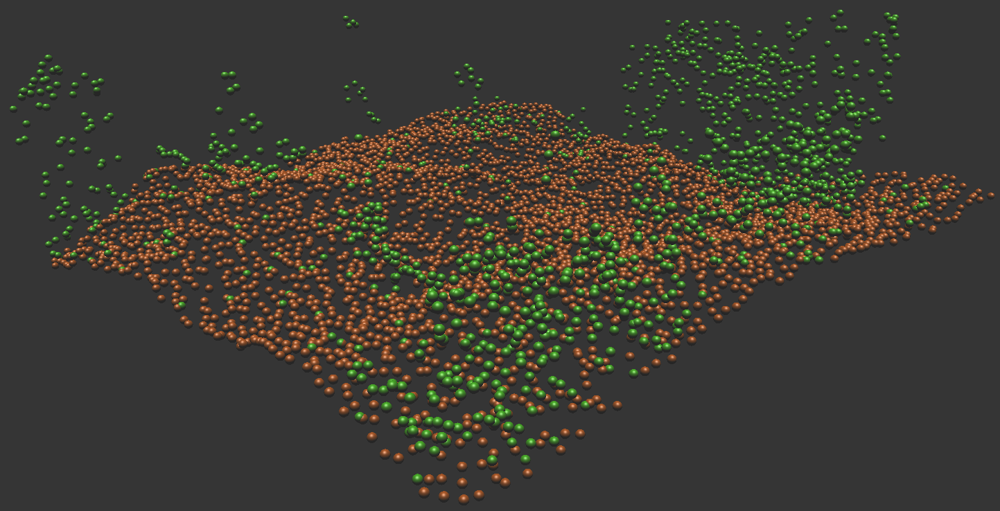
Overview
- Learning about point cloud density and its anomalies
- Processing point clouds while dealing with high density
- Describing vegetation using lidar point cloud in three dimensions
- Describing terrain changes using time-series of surfaces
- Publishing the results in a reproducible way
Chapter 1
Density anomalies in point clouds
Use of point cloud densities
- biomass estimation [Calders et al. 2015]
- leaf area density distribution [Oshio et al. 2015]
- crown density [Dalponte et al. 2009]
- subcanopy solar radiation [Bode et al. 2014]
- vegetation fragmentation [Petras at al. 2017]
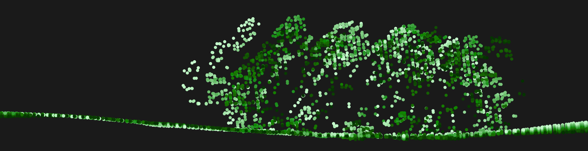
Density anomalies

detail of an end of scan line
Density anomalies

point density in swath overlap
Density anomalies
classified group point density in swath overlap
Density anomalies
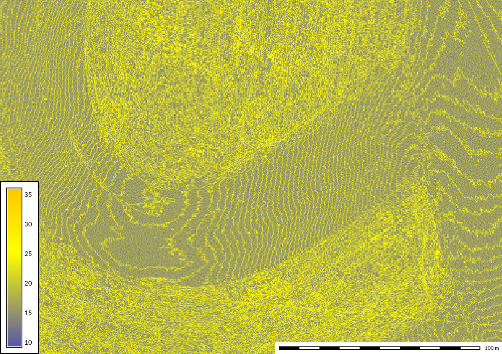point distribution in UAV point cloud
Density anomalies

influence of vegetation on point distribution
Literature review
- overview of density anomalies and potential issues
- linked to examples in literature and NC datasets
- identification of potential causes and solutions
Planned publication
Petras, V., ... Density anomalies in lidar and UAV point clouds.Target journal(s): Remote Sensing of Environment or GIScience & Remote Sensing
Chapter 2
Homogenization and decimation of point clouds
Point density for airborne lidar
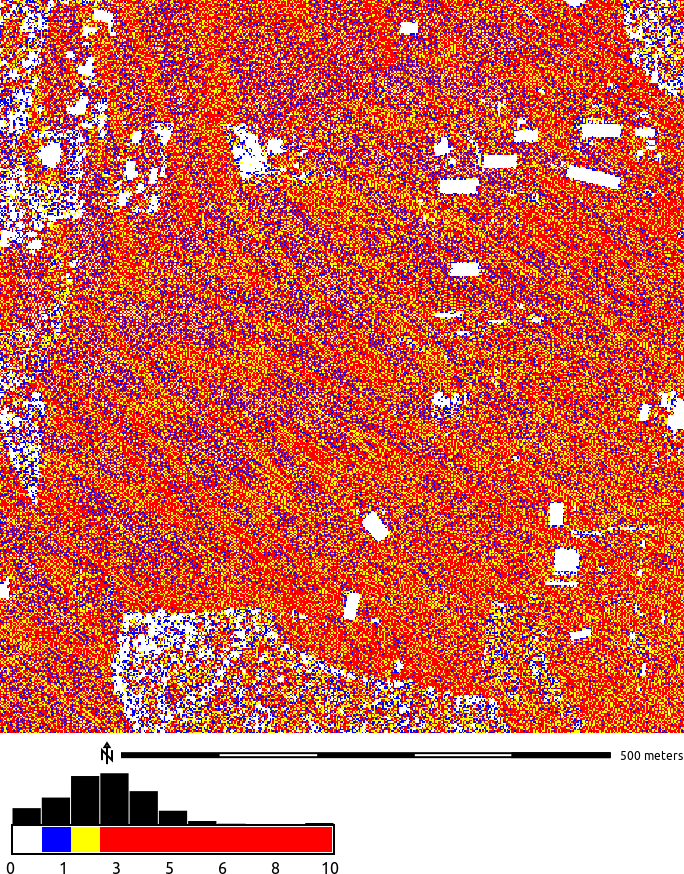raster resolution 1.5 m
Point density for UAV imagery SfM point cloud

raster resolution 0.5 m
Point density for Kinect point cloud

0.37 m × 0.35 m, raster resolution 0.002 m
Point density for terrestrial lidar

raster resolution 0.5 m, red color used for 80 to 18 thousand points per cell
Decimation
- decimation ~ thinning ~ sampling
- makes the point cloud smaller, more manageable
- count-based decimation: preserves variations in density
- grid-based decimation ~ binning: removes variations in density
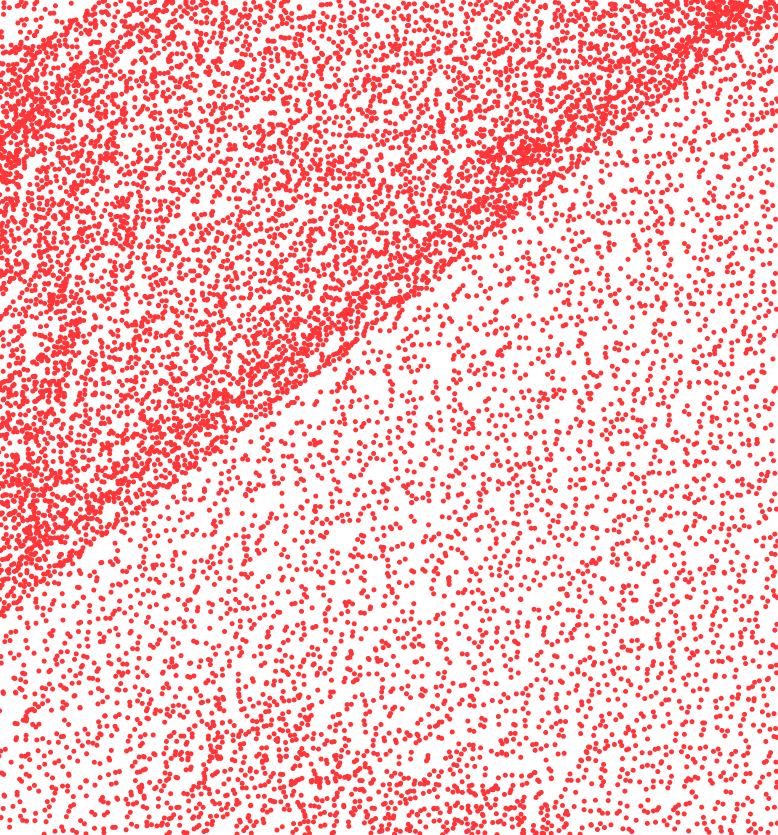

count-based decimation effect
Decimation
- decimation ~ thinning ~ sampling
- makes the point cloud smaller, more manageable
- count-based decimation: preserves variations in density
- grid-based decimation ~ binning: removes variations in density

grid-based decimation effect
Questions
- Which decimation performs better for topography and microtopography?
- How this changes with the point cloud acquisition method?
- Is the simplest decimations enough? Or do we need to use slower but more sophisticated techniques?
Evaluating level of detail
- microtopography [e.g. Watt 1947]: small variations in topography
- local relief model [Hesse 2010]: features other than trend


30-60cm wide, 30cm deep, 60m long gully (resolution 30cm)
Influence of grid-based decimation resolution


 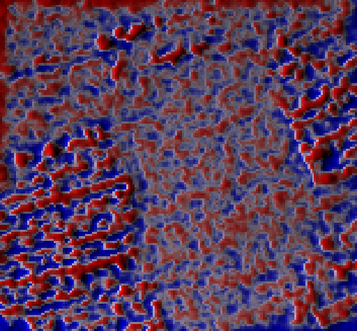
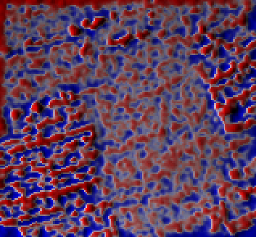
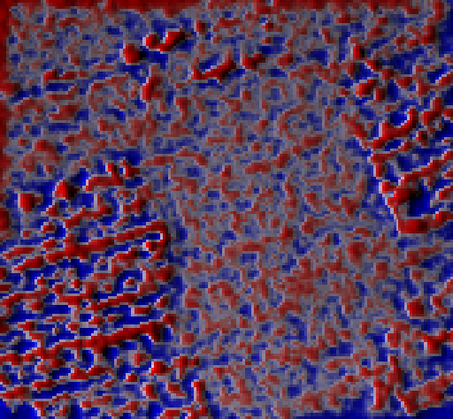
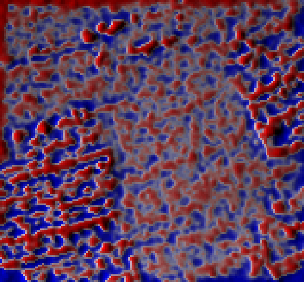

 grid size: 0.1 m → 0.3 m → 0.9 m → 1.5 m
grid size: 0.1 m → 0.3 m → 0.9 m → 1.5 m
(points removed: 0 % → 81 % → 98 % → 99 %)
Removing points
Airborne lidar
- count-based and grid-based decimations are equivalent

Terrestrial lidar
- grid-based decimation performs better

Contributions
- significant decimation possible and (micro)topography is preserved
- for all 4 datasets from 4 sensors at given resolution
- faster and simpler count-based decimation more advantageous
- in most cases count-based decimation provided same results as grid-based decimation
- grid-based decimation needed for specific cases
- grid-based decimation is beneficial for specific distribution of terrestrial lidar data
- simple decimations are sufficient, but complex decimation have their place
Publication
Petras, V., A. Petrasova, J. Jeziorska, and H. Mitasova (2016). Processing UAV and lidar point clouds in GRASS GIS. In: ISPRS-International Archives of the Photogrammetry, Remote Sensing and Spatial Information Sciences, pp. 945–952. DOI:10.5194/isprs-archives-XLI-B7-945-2016[560 reads on ResearchGate, Sep 8, 2018]

Software
- extended GRASS GIS module for binning (r.in.lidar)
- created GRASS GIS module for binning in 3D (r3.in.lidar)
- created module for count- and grid-based decimation (v.decimate)
- extended GRASS GIS module for point cloud import (v.in.lidar)
- local relief model implementation for GRASS GIS (r.local.relief)
- point cloud transect (v.profile.points)
- under development: tool which performs the tests done in the paper

Educational material
Processing lidar and UAV point clouds in GRASS GIS
available online
(and translated to Spanish by GRASS GIS community).
Training
Workshop at FOSS4G 2017 in Boston,Center for Geographic Analysis, Harvard University.
Chapter 3
Description of 3D structure in lidar point clouds
Lidar point clouds
full lidar point cloud in vegetation-related applicications
- habitat characterization [e.g. Sasaki et al. 2016]
- fuel modeling [e.g. García et al. 2011]
- tree models [e.g. Gorte & Winterhalder 2004]
- ...

3D raster
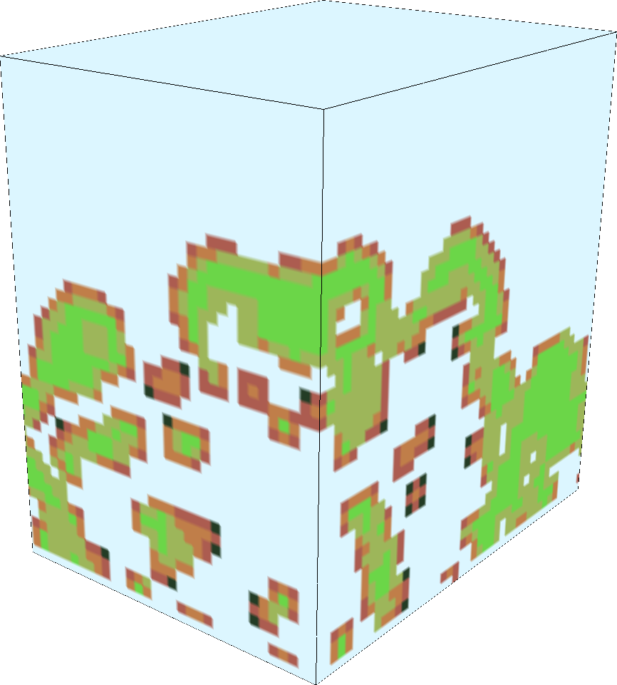2D forest fragmentation index
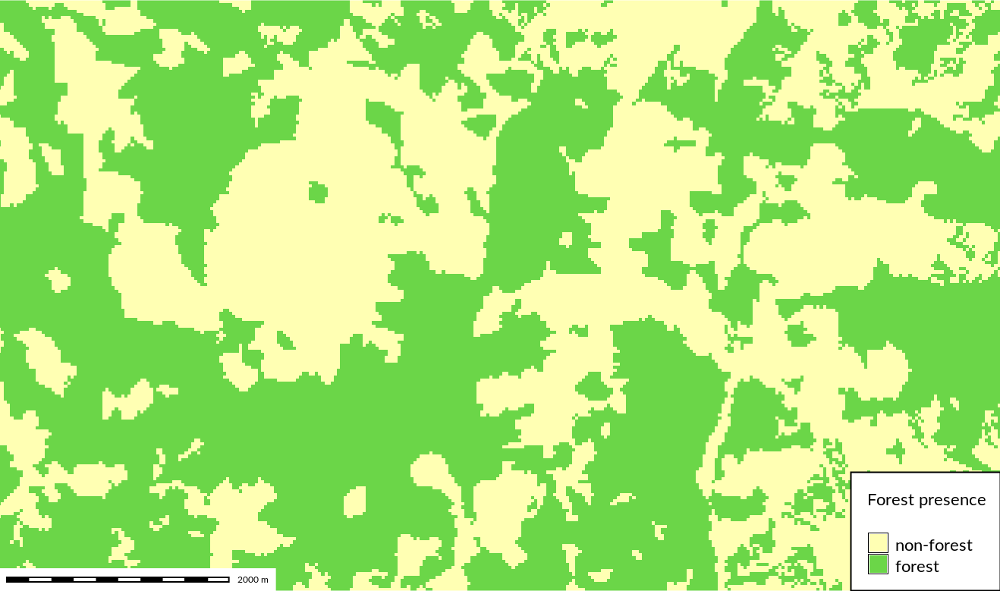forested areas
2D forest fragmentation index

forest fragmentation index [Riitters et al. 2000]
Fragmentation index

assignment of fragmentation classes [Riitters et al. 2000], generalized
Questions
- Is 3D raster representation appropriate for lidar data analysis?
- How to derive and describe 3D structure captured in lidar point clouds?
- Is a 2D landscape index extensible and applicable to 3D vegetation structure?
Point cloud and index profiles

slice of raw point cloud and slice of fragmentation index 3D raster
Point presence and index profiles
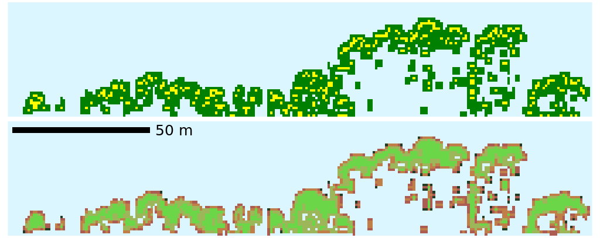slice of point presence 3D raster and slice of fragmentation index 3D raster
Profile of 3D raster

As 2D raster

Contributions
- 3D raster representation is suitable for lidar data analysis of vegetation structure
- 2D remote sensing and landscape ecology concepts can be applied in 3D
- generalized 3D fragmentation index is now available
- aggregation method resulting in a 2D raster is also available
Publication
Petras, V., D. J. Newcomb, and H. Mitasova. 2017. Generalized 3D fragmentation index derived from lidar point clouds. In: Open Geospatial Data, Software and Standards. DOI:10.1186/s40965-017-0021-8[Accessed 613 times at SpringerOpen, Sep 8, 2017]

Software
- 3D fragmentation index (r3.forestfrag)
- revised 2D fragmentation index (r.forestfrag)
- dominant fragmentation class (r3.count.categories)
- profile/slice of a 3D raster (r3.profile)
- 3D scatter plot of 3D raster (r3.scatterplot)
- 3D scatter plot of 2D raster (r.scatterplot)

Chapter 4
Analysis of lidar-derived dynamic surfaces
Migrating landform
 Jockey's Ridge, 1974 - 2012
Jockey's Ridge, 1974 - 2012
Questions
- How to represent landform changes in time?
- How to visualize landform migration?
Simple experiment
Series of DEMs for tests created using Tangible Landscape

Contour evolution
year 2001, z = 110m
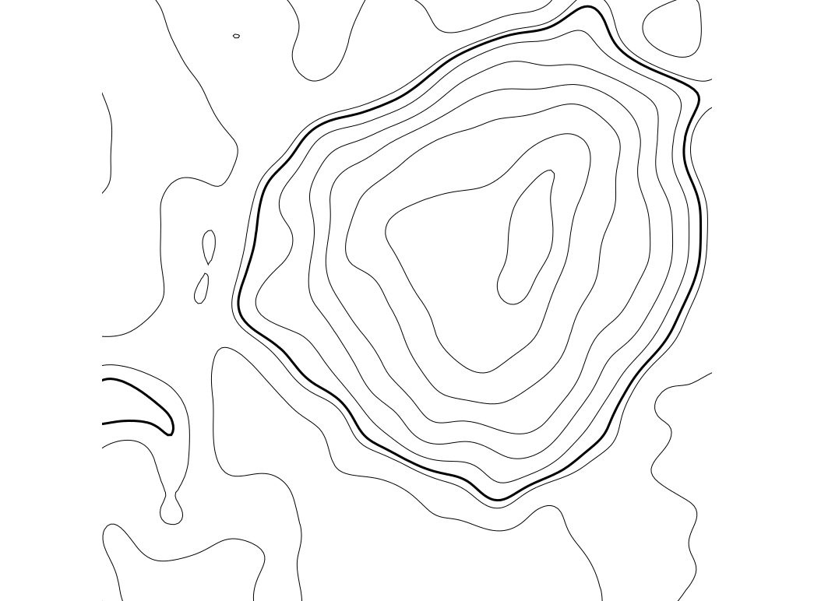Contour evolution
year 2005, z = 110m

Contour evolution
year 2008, z = 110m
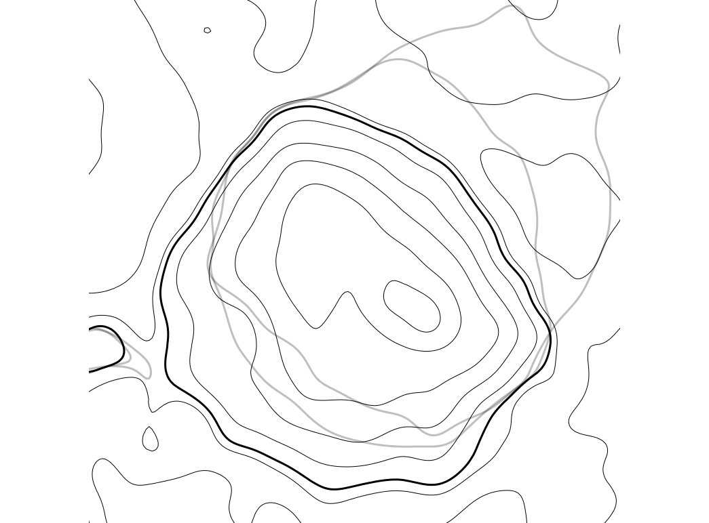Contour evolution
year 2009, z = 110m
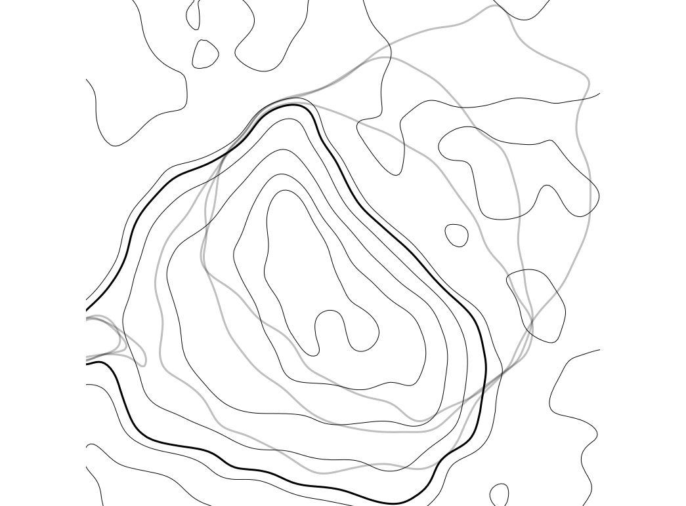Define migration areas
Mask areas outside the range of 110m contour migration

Assign time attribute
Each 110m contour is assigned a time [year] attribute
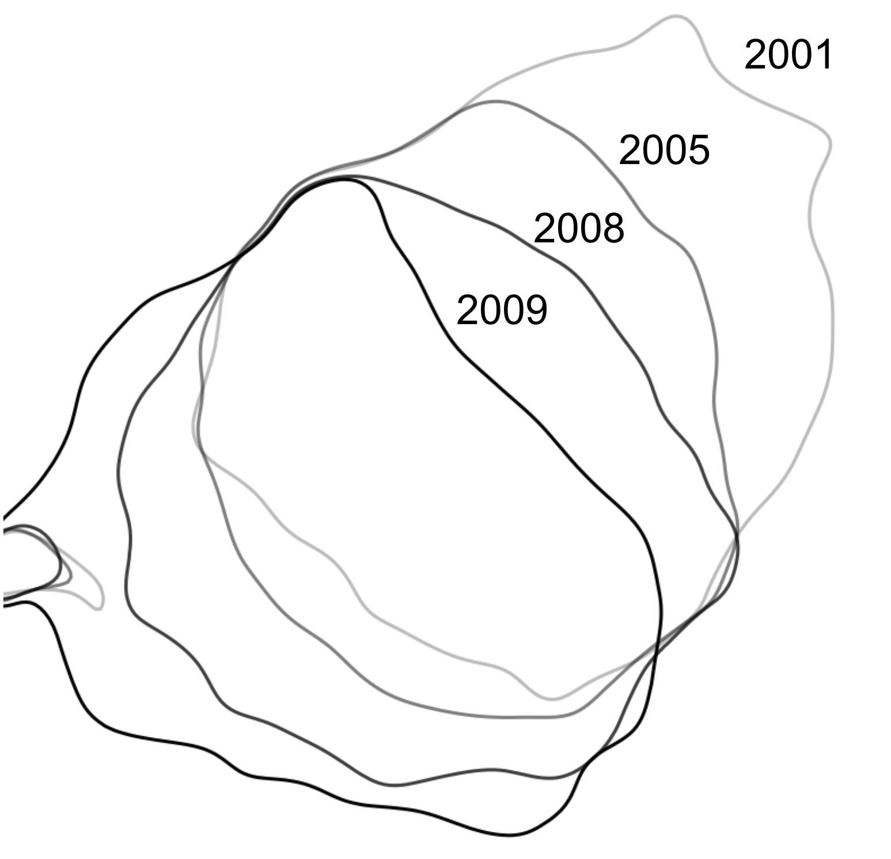Interpolate temporal surface
Temporal surface is interpolated from a time series of 110m contours

Migration gradient field
Gradient lines over time and vectors over migration rates


Dynamic visualization of the gradient field
Shows spatial pattern of mass concentration and dispersal over time
Inspired by Tokyo Wind Speed application by Cameron Beccario. Derived from
air.js source code.
Uses HTML, CSS, JavaScript and D3.js library.
Jockey's Ridge

Contributions
- visual and quantitative technique for landform migration
- magnitude and direction of horizontal change
- spatial distribution of rate of change
-
use cases:
analysis of 3D monitoring data or model calibration
- migrating landforms
- evolving shorelines and islands
- fire spread
- disease spread
- glacier melting and movement
- landslide path
Publication
Petras, V., H. Mitasova, and A. Petrasova (2015). Mapping gradient fields of landform migration. In: Geomorphometry for Geosciences. Ed. by Jasiewicz, J., Z. Zwolinski, H. Mitasova, and T. Hengl. p. 173 - 176. ISBN 978-83-7986-059-3. [Best Paper Award at Geomorphometry 2015, 1316 PDF hits on Aug 31, 2017]
Software
- computation of the gradient field (r.contour.evolution)
- can be implemented in any GIS-like software
- dynamic visualization of the field (r.out.jscomet and modified JavaScript code)
Chapter 5
Publishing using an open science framework
Science and software
- software must be available to readers [Nature Methods - 4, 189 (2007)]
- source code part of method description [Ince et al. 2012, Morin et al. 2012]
- recomputability orthogonal to source code [Gent 2013]
- reproducibility, replicability, and repeatability required [Fehr et al. 2016]
- use of open source tools part of reproducibility [Less 2012]
- easily reproducible result reproduced in 10 minutes [Schwab et al. 2000]
The common ways
- binary: not flexible, not transparent
- source code: not enough by itself
- repository: easy to delete (e.g. on GitHub)
- virtual machine: too cumbersome
- web service: needs to be maintained
Initial questions
- How to ensure reproducibility of results in the paper?
- Where to publish source code so it is preserved?
- How to publish software so it is reusable?
Reproducibility
- text in paper explicitly refers to code for full reproducibility
Part of Availability of data and materials section in Petras et al. 2017
Reproducibility
- repository gives concrete steps

Part of a README file from repository associated with Petras et al. 2017 paper
Reproducibility
- result after running the commands

Data-driven figures reproduced using the repository associated with Petras et al. 2017 paper
Reproducibility
- flexible reproducibility and reuse with new software
Part of Availability of data and materials section in Petras et al. 2017
Integrating code into a larger project
- Avoiding creation of a new open source project for each paper
- GRASS GIS can integrate smaller projects.
- New methods as new functions or improvements of existing ones
- GRASS GIS modules can be added or extended.
- Preprocessing, visualization, and user interface included
- Different tools and interfaces are available in GRASS GIS.
- Well integrated with existing analytical tools
- GRASS GIS modules use unified interfaces and exchange formats.
- Small, isolated projects often disappear
- GRASS GIS modules get long-term maintenance from the community.

Questions
- What are the differences between software tool and research platform?
- Who are the authors of significant additions to the code?
- Are they the same as the maintainers of the code?
- Are they the same as the original authors?
- How much original research is in the software?
- What is the ratio of original research code and implementations of existing methods?
- How many researches are contributing the original research?
- What makes software and code suitable for research and for practitioners?
Contributions
- general framework for publishing scientific code
- concrete steps for geospatial use case
- qualitative evaluation of GRASS GIS applicability as a platform for publishing and preserving scientific code
Planned publication
A framework for open geospatial science
Target journals:
PLOS ONE
Environmental Modelling & Software
Related publications
Petras, V., A. Petrasova, B. Harmon, R. K. Meentemeyer, and H. Mitasova (2015).
Integrating free and open source solutions into geospatial science education.
In: ISPRS International Journal of Geo-Information 4.2, p. 942–956
[1992 full-text views, MPDI on Sep 5, 2017]
Rocchini, D., V. Petras, A. Petrasova, N. Horning,
L. Furtkevicova, M. Neteler, B. Leutner, and M. Wegmann.
Open-access and open-source for remote sensing training in ecology and conservation
In: Ecological Informatics, Volume 40, 2017, p. 57-61, ISSN 1574-9541,
DOI:10.1016/j.ecoinf.2017.05.004.

Related posters

Petras, V., Y. Chemin, M. Landa, T. Leppelt, P. Zambelli, L. Delucchi, M. Di Leo, S. Gebbert, and M. Neteler (2017). How innovations thrive in GRASS GIS. NCGIS2017, Raleigh, NC, USA.
and also:
Petras, V. and Gebbert, S. (AGU 2014),
Petras (EGU 2015) and Chemin (EGU 2015)
Teaching
- Course: Tools for open geospatial science
- teaching materials published as a website
- research focus with extension to industry
- topics: advanced writing tools, revision control systems, command line, remote access, Linux, QGIS, GRASS GIS, GDAL, interactive notebooks, publishing source code

Image credit: opensource.com
Timeline
| September, October 2017 | Sudden oak death modeling |
| Fall 2017 | Open science course |
| Fall 2017 | Density anomalies paper |
| Late fall 2017, winter 2018 | Open science paper |
| Spring/summer 2018 | Final defense |
Appendix
Selected additional projects
- Spatio-temporal landscape modeling
- Disease spread model – SOD (current)
- Urban growth model – FUTURES (ongoing)
- Tangible user interface for geospatial modeling
- Tangible Landscape for QGIS (planned)
- Point cloud and terrain processing
- Desktop and web-based temporal visualizations (planned paper)
- Open source software for open science
- Seamless desktop and remote computations (ongoing)
Sudden oak death model
- hardcoded parameters → GUI + CLI (GRASS GIS)

Sudden oak death model
- multiple stochastic runs which run in parallel
- OpenMP
- week-based simulation but threads created for chunks of weeks to use less resources (in comparison for one thread for each week of every run)
- inputs shared over threads
Sudden oak death model
- optimization
- inlining (reduces function call overheads)
- C++11 move semantics (avoids copy operations)
- undefined behavior → correct memory management
- tested and versioned
FUTURES PGA – before
- configuration file based interface

FUTURES PGA – before
- preprocessGISData.cpp

FUTURES PGA – after
- GUI, command line, Python

FUTURES PGA – after
- faster input/output, efficient memory usage
- binary input and put reduces time spent by I/O operations
- only memory which is needed is used
- flexible inputs, interface
- resolution and extent can be changed arbitrarily
- easy to add new parameters
- control over stochastic outcomes
- fixed memory management, edge cases
- all memory operations are done correctly (no failures or random results)
- handling of cases such as unresolved items from previous iteration